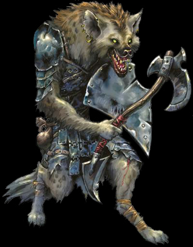
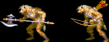

| 고블린 | | | 놀 | | | 코볼트 | | | 아울베어 |
| 스켈레톤 | | | 구울 | | | 자이언트 스콜피온 | | | 자이언트 비틀 |
| 트로글로다이트 | | | 헬 하운드 | | | 셰도우 엘프 | | | 가고일 |
Gnoll
|  | 이 인간형의 생물은 인간보다 약간 크다. 회색피부에 모피가 몸을 덮고 있으며 하이애나같은 얼굴에 불그스름 한 회색빛의 갈기가 나 있다. 룰 상에서의 묘사 놀은 하이애나 얼굴의 사악한 인간형 생물이다. 7.5피트 정도의 키에 300파운드의 몸무게가 나간다. 야행성 육식동물의 습성을 가지고 있으며 먹을거리로써 지능이 있는 생물을 즐겨한다. 피식자가 더욱 비명을 지르기 때문이다. 숫적 우세를 점한 상태에서 전투하는 것을 선호하며 매복을 통한 습격에 능하다. 놀들은 자이언트와 그외 대부분의 유사인간류를 싫어하며 육체노동을 경멸시 한다. 언어는 놀 언어를 쓴다. (이들이 선호하는 클래스는 레인저이라고 한다.) |
| 평균 HP | 액스 놀(axe-gnoll) : 68 - 떡갈나무 요새(6) 이전 / 136 - 떡갈나무 요새(6) 이후 보우 놀(bow-gnoll) : 52 - 저거노트 전차(3-A) / 1 - 그외 |
||||||||||||
| 격파시 획득 XP | 500 | ||||||||||||
| 등장 스테이지 | 트린턴 마을(2) ~ 저거노트 전차(3-A), 베수비아 강(3-B) / 절망의 숲(5-A), 아인슨 마을(5-B) ~ 미로의 숲(8-A), B / 게이트 웨이(10-1) 오버츄어 (10-2) - 비밀의 지하 세계(9-C)를 거쳐서 왔을 경우 |
||||||||||||
| 드랍 가능한 아이템 | 돈 : 1sp x 1 ~ 1sp x 3 (1~3sp)
아이러니하게도 클레릭이 있을 경우 단검이 나오는 경우가 꽤 있다. |
||||||||||||
| ※ 드랍 되는 아이템은 | '돈 + 점수 아이템 1점 + 그외 아이템 1점'으로 구성된다(물론 드랍 되지 않을 확률도 있다.) | ||||||||||||
| 스틸 가능한 아이템 |
|
||||||||||||
|  게임상에서는 액스 놀과 보우 놀이 등장한다. |
액스 놀의 경우 무기의 긴 리치가 위협적이다. 그러나 공격패턴이 그리 많지 않고 움직임이 그리 현란하지 않기 때문에 상대하기 어려운 적은 아니다. 보우 놀의 경우 전작 TOD와는 달리 상대하기가 상당히 쉬워 졌다. 이들이 떨구는 화살은 스코어 어택시 도움이 많이 되 기도 한다. |
등장 방식
액스 놀은 대체로 2~3마리가 화면 위에서 뚝 떨어지거나 화면 우측이나 좌측에서 얌전하게(?) 뛰쳐나온다.
나오는 도중엔 공격을 하지 않기 때문에 쉽게 제압 할 수 있다.
보우 놀의 경우 스테이지 3-A를 제외하면 화면 우측이나 좌측에서 3~4마리가 나와서 지원사격을 하고 도망간다.
움직임의 패턴
고블린 처럼 뒤를 잡으려는 움직임은 보이지 않기 때문에 대처하기 어렵지 않다.
다만 무기의 리치만큼 거리를 유지하려고 하기 때문에 무기 리치가 짧은 클레릭이나 엘프는 접근시 유의하자.
접근을 하면 갑자기 백점프를 해서 거리를 벌린 후 공격을 하는 경우가 있다. 대쉬 공격을 할 때 특히 주의해야 한다.
공격 패턴
| 스테이지 | 오프닝 ~ 트린턴 마을(2) |
저거노트 전차(3-A), 베수비아강(3-B) 전반부 |
베수비아강 후반부 ~ 아인슨 마을(5-B) |
절망의 숲(5-A) | 그 이후 |
| 근접공격, 무릎차기 데미지 |
18 / 27 | 18(10) / 22(15) | 15 / 23 | 14 / 22 | 20 / 29 |
| 스테이지 | 오프닝 ~ 트린턴 마을(2) |
저거노트 전차(3-A) | 베수비아강(3-B) ~ 절망의 숲(5-A) |
그 이후 |
| 화살 데미지 | 14 / 20 | 10 / 15 | 14 / 20 | 16 / 23 |
※ 붉은색은 파이터가 입는 데미지, 푸른색은 매직 유저가 입는 데미지.
클레릭/드워프는 파이터에 가까운 데미지를, 시프/엘프는 매직 유저에 가까운 데미지를 입는다.
| 근접 공격 1 리치가 길다는 점이 무서운 공격이다. 그러나 발동이 빠르지 않고 판정이 무기 앞쪽으로 쏠려있으니 재빠르게 붙어서 먼저 공격하자. |
|
| 근접 공격 2 근접 공격1 이후에 이어서 들어오는 공격. 근접 공격1보다 약간 리치는 짧지만 공격 후 빈틈이 적다는 점에 주의. |
|
| 무릎 차기 가깝게 붙었을 때 앞으로 살짝 미끄러지다가 점프하면서 무릎으로 차는 공격이다. 생각보다 빠르게 공격이 들어와서 보고 피하기는 쉽지 않은데 점프를 할 때부터 판정이 생기기 때문에 아주 가까이 붙어 있다면 오히려 맞지 않는 묘한 공격. 다만 판정이 꽤 오래 지속이 되기 때문에 점프를 한 후에 섣불리 접근 했다간 데미지를 입을 수 있다. |
||
| 발차기 스테이지 3-A의 보우 놀들이 시도하는 공격이다. 가까이 접근 했을 때, 혹은 쓰러졌다가 일어섰을 때 날아오는 공격인데 의외로 빠르고 판정이 좋다. 특히 공속이 느린 드워프나 매직유저는 다운공격시 주의하자. |
||
지원 사격
| 화면의 좌우측 끝에서 3~4마리씩 나타나서 화살로 지원사격을 한다. 앉아서 피할 수 있으며 드워프는 서 있더라도 맞지 않는다. 이녀석들은 어떤 공격이든 한방에 죽고 가드를 못하기 때문에 쉽게 잡을 수 있으니 스코어 어택이라면 열심히 잡자. 물론 디스플레이서 클록(displacer cloak)이 있다면 피해를 입지 않는다. |
대처법/주의점
전작 TOD에 비해 상대하기가 확실히 많이 쉬워졌다. 그러나 공격시의 긴 리치는 주의 할 필요가 있다.
특히 클레릭이나 엘프는 기본 무기의 리치가 짧다는 점을 세삼 느낄 수 있을 것이다.
대쉬 공격이나 '슬라이딩 → 캔슬 슬래쉬'등으로 재빠르게 접근해서 공격하면 된다.